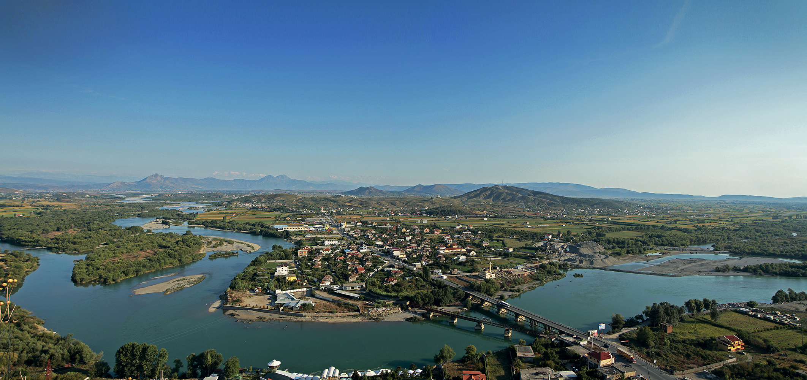

SHKODRA-SIGHTSEEING TOUR
Less than two hours’ north of Tirana, Shkoder is known for its stunning natural setting, surrounded by the lakes and valleys of the Albanian Alps. On this tour, visit landmarks including Rozafa Castle, Shkodër Cathedral, and the Leaden Mosque; shop for souvenirs at the local bazaar, and tuck into a traditional Albanian lunch (own expense) at a local restaurant.
We suggest you to stay at Hotel Luani i Arte.